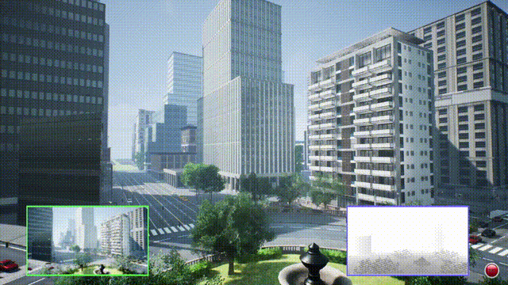
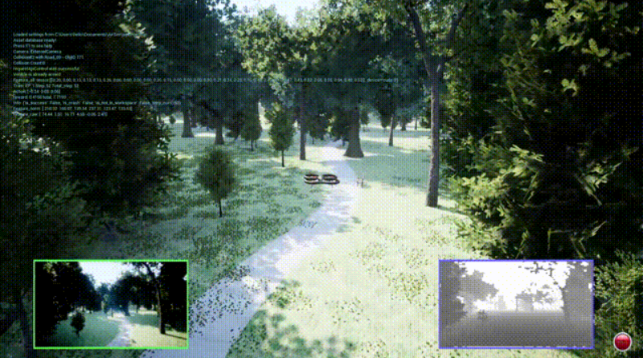
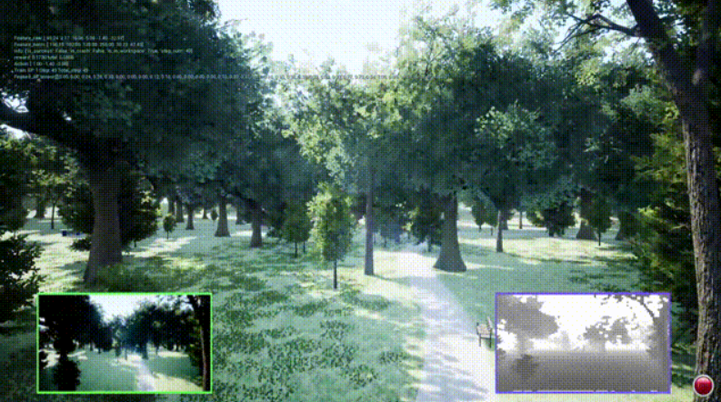
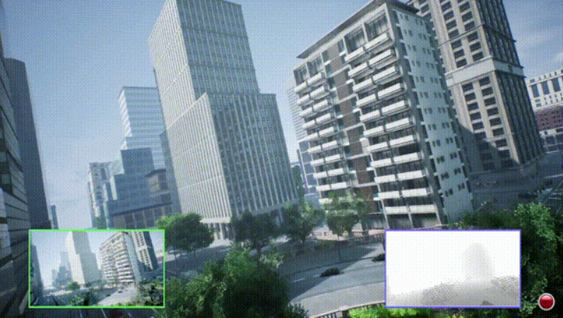

UAV Trajectory Demonstrations
Learned flight policies evaluated across multiple UAV dynamics models and environment complexities
.gif)
Multirotor Navigation (NH Dynamics): PPO-trained policy executing smooth waypoint navigation with adaptive velocity control. Notice preemptive deceleration near obstacles demonstrating learned spatial awareness. Bottom-left shows top-down tactical view, right panel displays depth camera observation input.
.gif)
Simplified Dynamics Robustness Test: Same policy evaluated under reduced-fidelity physics (simplified drag/inertia). Agent maintains stable collision-free flight despite significant model mismatch, validating robustness for sim-to-real transfer where real-world dynamics inevitably differ from simulation.
Fixed-Wing Aircraft in Urban Environment: SAC-trained agent navigating city terrain with non-holonomic constraints. Executes wide banking turns accounting for minimum turning radius and forward velocity requirements. Policy learned aerodynamic constraints purely from environment interaction without explicit programming.

Flapping-Wing Dynamics (5Hz Oscillation): TD3 agent controlling bio-inspired UAV with sinusoidal thrust oscillating at 5Hz. Despite complex time-varying actuation, agent maintains directional control through urban corridors. Demonstrates DRL's ability to handle unconventional, underactuated aerial platforms.


